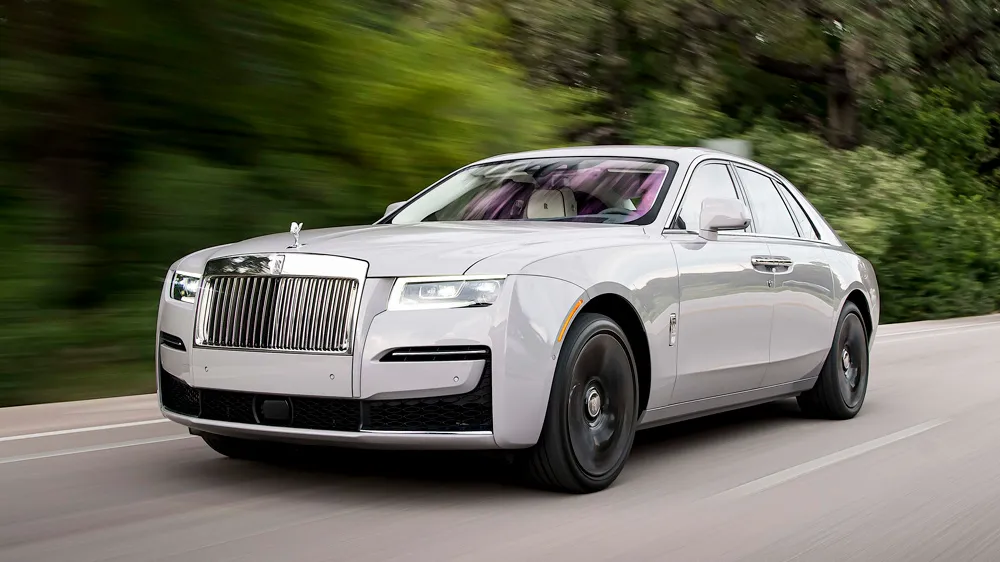

ROLLS ROYCE
ROLLS ROYCE PHANTOM
 The Phantom was unveiled by livestream on 27 July 2017.[9]
It made its public debut at a special exhibition Rolls-Royce held in London two days later on 29 July. The event, dubbed "The Great Eight Phantoms", took place at Bonhams auction house in Mayfair. The exhibition gathered a noteworthy Phantom from each generation, from Fred Astaire's Phantom I to subsequent models driven by royalty, or made famous by celebrities, including John Lennon's Romany gypsy wagon-style painted Phantom V—John Lennon's psychedelic Rolls-Royce.[9][10]
Design
The Phantom VIII's styling has been described as an evolution of the Phantom VII's as it bears most of the design features of its predecessor.[11][12][13]
Like its predecessor, the Phantom VIII has a short front overhang and upright front end, a long bonnet and set-back passenger compartment as well as a long wheelbase and a flowing rear end.[11] It also uses rear-opening "coach doors". For the first time on a Phantom, Rolls-Royce's trademark "Parthenon" radiator grille is integrated into the surrounding bodywork.[14]
The Phantom is available in two wheelbase lengths. The short one is the shortest Phantom since at least 1939.
The Phantom was unveiled by livestream on 27 July 2017.[9]
It made its public debut at a special exhibition Rolls-Royce held in London two days later on 29 July. The event, dubbed "The Great Eight Phantoms", took place at Bonhams auction house in Mayfair. The exhibition gathered a noteworthy Phantom from each generation, from Fred Astaire's Phantom I to subsequent models driven by royalty, or made famous by celebrities, including John Lennon's Romany gypsy wagon-style painted Phantom V—John Lennon's psychedelic Rolls-Royce.[9][10]
Design
The Phantom VIII's styling has been described as an evolution of the Phantom VII's as it bears most of the design features of its predecessor.[11][12][13]
Like its predecessor, the Phantom VIII has a short front overhang and upright front end, a long bonnet and set-back passenger compartment as well as a long wheelbase and a flowing rear end.[11] It also uses rear-opening "coach doors". For the first time on a Phantom, Rolls-Royce's trademark "Parthenon" radiator grille is integrated into the surrounding bodywork.[14]
The Phantom is available in two wheelbase lengths. The short one is the shortest Phantom since at least 1939.
ROLLS ROYCE GHOST

The Rolls-Royce Ghost is a full-sized luxury car manufactured by Rolls-Royce Motor Cars. The "Ghost" nameplate, named in honour of the Silver Ghost, a car first produced in 1906, was announced in April 2009 at the Auto Shanghai show. The production model was officially unveiled at the 2009 Frankfurt Motor Show. The Ghost Extended Wheelbase was introduced in 2011. During development, the Ghost was known as the "RR04". It was designed as a smaller, "more measured, more realistic car" than the Phantom, aiming for a lower price category for Rolls-Royce models.
According to a statement by BMW AG, this generation of automobile, with an internal combustion engine, is to be produced until 2030, at which point the company intends to manufacture electric models only.[2]